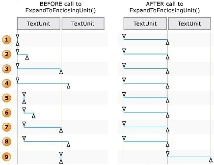
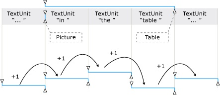
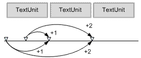

title: Using IUIAutomationTextRange to Access and Manipulate a Text Range description: This topic describes how to use the properties and methods of the IUIAutomationTextRange interface to access and manipulate the textual content of a text-based control. ms.assetid: 66BC7324-5322-4996-AF62-766936559F0E keywords:
This topic describes how to use the properties and methods of the IUIAutomationTextRange interface to access and manipulate the textual content of a text-based control.
The Microsoft UI Automation text object model is based on the concept of the text range. A text range is an object that exposes the IUIAutomationTextRange interface, and represents a contiguous span of text in a text-based control. Each text range has both a starting endpoint and an ending endpoint, and all textual content between the two endpoints is considered part of the range. A text range whose starting endpoint and ending endpoint are at the same location is called a degenerate (or empty) text range. A degenerate text range is used to mark a specific location within the text of a control, such as the location of the text insertion point.
Client applications acquire text range objects by using the properties and methods of the IUIAutomationTextPattern interface. The IUIAutomationTextRangePattern::DocumentRange property retrieves a text range that represents the entire textual content of a text-based control, while other methods acquire text ranges that represent some portion of the content, such as the selected text, the visible text, or an object embedded in the text.
The IUIAutomationTextRangePattern::GetVisibleRanges and GetSelection methods can retrieve arrays of text range objects. If a control is partially obscured by an overlapping window or other object, GetVisibleRanges returns an array containing a text range object for each partially visible line of text. Similarly, if a text-based control supports the selection of multiple, disjoint spans of text, GetSelection returns an array that contains a text range object for each selected span.
The IUIAutomationTextRangePattern::RangeFromChild method enables a client application to retrieve a text range that encloses an object that is embedded in the textual content. The client specifies the IUIAutomationElement interface pointer of an embedded object, such as an image, a table, or a hyperlink, and the method returns a text range that encloses the object. However, if the embedded object has no text associated with it, the method returns a degenerate text range.
A client application can use the IUIAutomationTextRangePattern::RangeFromPoint method to retrieve a text range for the visible text or embedded object that is nearest to the specified screen coordinates.
The IUIAutomationTextRange interface includes a number of methods that enable a client application to control the selection of text in a text-based control.
Client applications can use the IUIAutomationTextRange::Select method to select the text that corresponds to a text range, and to remove the previous selection, if any, from the text control. Calling Select with a degenerate text range moves the insertion point to the location of the text range without selecting any text.
If a control supports the selection of multiple, disjoint spans of text, a client can use the IUIAutomationTextRange::AddToSelection and RemoveFromSelection methods to add text ranges to, and remove them from, the collection of selected text ranges. If the control supports only one selected text range at a time, but the selection operation would result in the selection of multiple disjoint text ranges, the method returns either an E_INVALIDOPERATION error, or extends or truncates the current selection. A client application can discover whether a control supports the selection of single or multiple spans of text, or none at all, by checking the IUIAutomationTextPattern::SupportedTextSelection property.
If a text-based control supports text insertions, calling IUIAutomationTextRange::AddToSelection or RemoveFromSelection on a degenerate text range in the control moves the insertion point but does not select any text.
Client applications can use the IUIAutomationTextRange::GetText method to retrieve the plain text of a text range. The plain text includes all control characters found in the source text, such as carriage returns and the Unicode left-to-right mark (LRM). The plain text does not include any markup tags such as HTML that may be present in the source text. Also, any escape codes in the source text are converted to the plain text equivalents. For example, " " is converted to a simple space character.
If an embedded object spans a range of text, the plain text includes the inner text of the object, but not the alternative text (the name property of the embedded object). For more information, see How UI Automation Exposes Embedded Objects.
The IUIAutomationTextRange::FindText method searches a text range for a particular string and, if it is found, returns a new text range that encompasses the string.
Text attributes determine the formatting style of the text in a text-based control, and include such things as foreground color, bullet style, font size, and so on. UI Automation supports a number of text attributes, and defines an identifier for each supported attribute. A client application can query a text range for the value of a particular text attribute by specifying an attribute identifier in a call to the IUIAutomationTextRange::GetAttributeValue method, along with a pointer to a VARIANT structure that receives the attribute value. For detailed information about each text attribute that UI Automation supports, see Text Attribute Identifiers.
The value retrieved by GetAttributeValue represents the value of the attribute across the entire text range. If all text in the range shares the same value for the specified attribute, that value is returned by GetAttributeValue. However, if the value of the attribute varies across the text range, GetAttributeValue returns an IUnknown pointer to a static token object called the ReservedMixedAttribute object. To discover whether the value of an attribute varies across a text range, a client application should compare the results of GetAttributeValue with the ReservedMixedAttribute object retrieved from the IUIAutomation::ReservedMixedAttributeValue property.
A text-based control is not required to support all UI Automation text attributes. If a client calls the IUIAutomationTextRange::GetAttributeValue method and passes the identifier of an unsupported attribute, the method returns an IUnknown pointer to a static token object called the ReservedNotSupported object. To discover whether a particular attribute is supported, a client application should compare the results of GetAttributeValue with the ReservedNotSupported object retrieved from the IUIAutomation::ReservedNotSupportedValue property.
Client applications can use the IUIAutomationTextRange::FindAttribute method to search a text range for text that has a particular text attribute. If found, the method returns a new text range that encompasses the matching text. Note that FindAttribute returns a text range for matching text even if the text is not visible.
A text range can include embedded objects such as tables, images, hyperlinks, and so on. A client application can retrieve a collection of all embedded objects in a range by calling the IUIAutomationTextRange::GetChildren method. Embedded objects that overlap with the range but are not entirely enclosed by it are also included in the collection. If the range contains no embedded objects, GetChildren retrieves an empty collection.
Although it depends on the provider of the text-based control, the GetChildren method typically does not return any children of the embedded elements. For example, if a text range contains a table that has a number of child cells, the GetChildren method typically returns just the table element and not the cell elements.
For performance or architectural reasons, GetChildren may not be able to retrieve IUIAutomationElement objects for all embedded objects in a text range. Instead, the provider might return a collection that includes virtualized items. For more information, see Working with Virtualized Items.
The IUIAutomationTextRange interface provides several methods for manipulating and navigating text ranges in a text-based control. The IUIAutomationTextRange::Move, MoveEndpointByUnit, and ExpandToEnclosingUnit methods move a text range or one of its endpoints by the specified text unit, such as character, word, paragraph, and so on. For more information, see UI Automation Text Units.
Despite its name, the ExpandToEnclosingUnit method does not necessarily expand a text range. Instead, it "normalizes" a text range by moving the endpoints so that the range encompasses the specified text unit exactly. The range is expanded if it is smaller than the specified unit, or shortened if it is longer than the specified unit. The following diagram shows how ExpandToEnclosingUnit normalizes a text range by moving the endpoints of the range.

If the text range starts at the beginning of a text unit and ends at the beginning of, or before, the next text unit boundary, the ending endpoint is moved to the next text unit boundary (see 1 and 2 in the previous illustration).
If the text range starts at the beginning of a text unit and ends at, or after, the next unit boundary, the ending endpoint stays or is moved backward to the next unit boundary after the starting endpoint (see 3 and 4 in the previous illustration). If there is more than one text unit boundary between the starting and ending endpoints, the ending endpoint is moved backward to the next unit boundary after the starting endpoint, resulting in a text range that is one text unit in length.
If the text range starts in the middle of a text unit, the starting endpoint is moved backward to the beginning of the text unit, and the ending endpoint is moved forward or backward, as necessary, to the next unit boundary after the starting endpoint (see 5 through 8 in the previous illustration).
When the IUIAutomationTextRange::Move method is called, the provider normalizes the text range by the specified text unit. Then, the provider moves the range backward or forward by the specified number of text units. When moving the range, the provider ignores the boundaries of any embedded objects in the text. (However, the unit boundary itself may be affected by the existence of an embedded object). The following diagram demonstrates how the Move method moves a text range, unit by unit, across embedded objects and text unit boundaries.

The IUIAutomationTextRange::MoveEndpointByUnit method moves one of the endpoints forward or backward by specified text unit. The following illustration shows how an endpoint moves forward.

The IUIAutomationTextRange::MoveEndpointByRange method enables a client application to set one endpoint of a text range to same location as the specified endpoint of a second text range.
The IUIAutomationTextRange::ScrollIntoView method scrolls a text range so that the text is visible in the viewport of the text-based control. When calling ScrollIntoView, a client can specify whether the text should be aligned with the top or bottom of the viewport.
A client application can use the IUIAutomationTextRange::GetEnclosingElement method to retrieve the IUIAutomation interface pointer of the innermost element that encloses a text range. The enclosing element is typically the text provider that supplies the text range. However, if the text provider supports child elements such as tables or hyperlinks, the enclosing element could be a descendant of the text provider.
The IUIAutomationTextRange interface includes two methods for comparing text ranges. The IUIAutomationTextRange::Compare method compares the starting and ending endpoints of two text ranges and returns TRUE if both endpoints are the same. The IUIAutomationTextRange::CompareEndpoints method compares either the start or the ending endpoint of the two ranges. The return value is zero if the endpoints are the same, or a positive value or negative value that indicates the relative positions of the two endpoints.
Client applications can use the IUIAutomationTextRange::Clone method to create an exact copy of text range. The new text range can be manipulated independently of the original text range.
A text range can include annotations if the text-based control supports them. There are many different kinds of annotations. The UIAutomationClient.h header file defines a set of named constant values that identify the types of annotations that UI Automation supports. For more information, see Annotation Type Identifiers.
Some kinds of annotations are represented by an automation element that supports the Annotation control pattern (IUIAutomationAnnotationPattern interface). Other kinds of annotations are exposed through the TextRange control pattern. For example, a provider could expose a simple spelling-error indicator by having the IUIAutomationTextRange::GetAttributeValue method return an AnnotationTypes text attribute of AnnotationType_SpellingError, and a null value for the AnnotationObjects text attribute.
You can retrieve a list of the types of annotations that are present in a text range by using the IUIAutomationTextRange::GetAttributeValue method. When calling the method, specify a text attribute ID of UIA_AnnotationTypesAttributeId and a pointer to a parameter of type VARIANT. When the method returns, the VARIANT parameter contains a list of annotation type identifiers, one for each type of annotation in the text range. For more information, see Annotation Type Identifiers.
To retrieve the annotations from a text range, call the IUIAutomationTextRange::GetAttributeValue method, specifying a text attribute ID of UIA_AnnotationObjectsAttributeId and a pointer to a parameter of type VARIANT. When the method returns, the VARIANT parameter contains an IUIAutomationElementArray interface that represents an array of automation elements, one for each annotation in the text range. The IUIAutomationElementArray::Length property indicates the number of elements in the array, and the IUIAutomationElementArray::GetElement method retrieves the IUIAutomationElement interface for a particular element.
To retrieve information about a particular annotation, first retrieve the IUIAutomationElement interface for the annotation element as described in the previous section. Next, retrieve the IUIAutomationAnnotationPattern interface for the annotation by calling the IUIAutomationElement::GetCurrentPatternAs method with a control pattern ID of UIA_AnnotationPatternId, an interface identifier of IID_IUIAutomationAnnotationPattern, and the address of a variable that receives the IUIAutomationAnnotation pointer for the annotation. Query the properties of the IUIAutomationAnnotation interface to retrieve the annotation type name and type ID, the name of the annotation author, the date and time of the annotation, and the IUIAutomationElement interface for the element that is being annotated.
Typically, an annotation applies to some subset of the text in a text range. After you retrieve the IUIAutomationElement interface for an annotation, you can pass the interface to the IUIAutomationTextRange2::RangeFromAnnotation method to retrieve a text range that contains the text that is the target of the annotation.
A provider implements the Styles control pattern to describe a UI element that has a specific style, fill color, fill pattern, or shape. This is especially useful when describing elements in a document, which frequently have such styles. Styles like this often carry information that is useful for customers with disabilities; for example, styles can describe a certain string as the title of a document, or a certain flowchart object as a diamond or a circle.
You can use the IUIAutomationTextRange::GetAttributeValue method to retrieve the names and identifiers of the visual styles that are used in a text range. Use the UIA_StyleNameAttributeId text attribute to retrieve the style names, and UIA_StyleIdAttributeId to retrieve the style identifiers.
A text-based control that supports visual styles can implement the Styles control pattern to enable clients to access information about a visual style used by the control. Clients access the Styles control pattern through the IUIAutomationStylesPattern interface. You can retrieve this interface by calling the IUIAutomationElement::GetCurrentPattern or GetCurrentPatternAs method, specifying UIA_StylesPatternId as the control pattern identifier.
The IUIAutomationStylesPattern interface includes properties and methods that provide the following information about a visual style:
Starting with Windows 8.1, text ranges may support the IUIAutomationTextRange2 interface. This interface supports the ShowContextMenu method. You can call this method to invoke any context menu that is associated with a text range. The scenario for this is autocorrection of text ranges or IME candidate selection. In these cases a context menu appears that supports user interaction.
Text and TextRange Control Patterns
UI Automation Support for Textual Content
Working with Text-based Controls
Â
Â